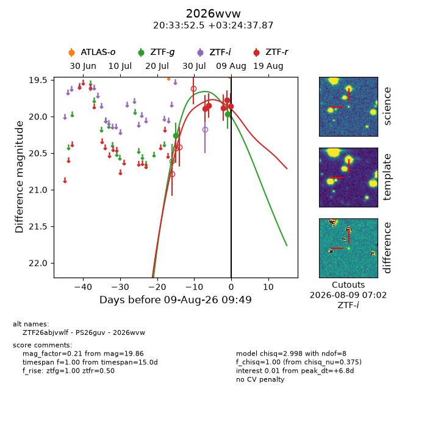
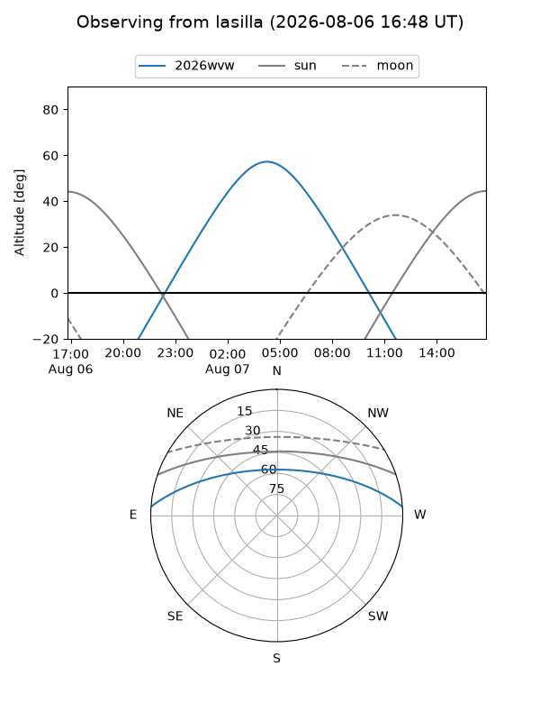
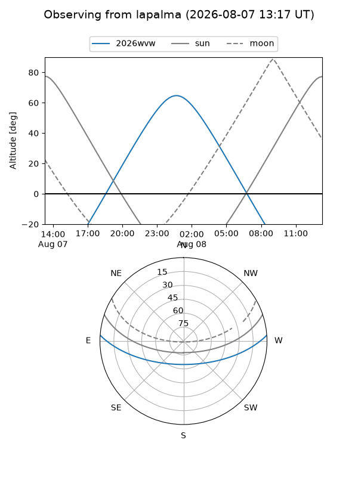
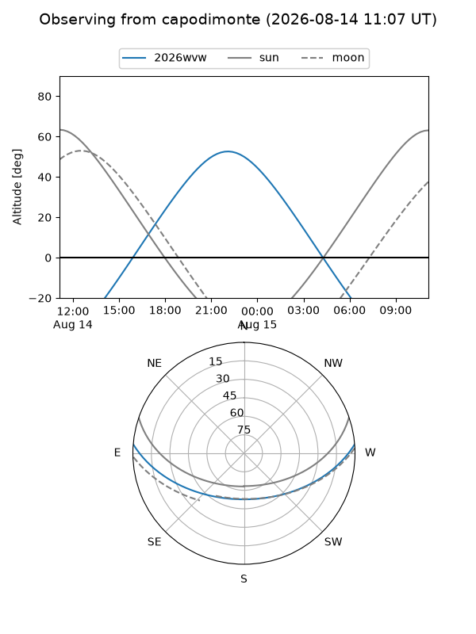
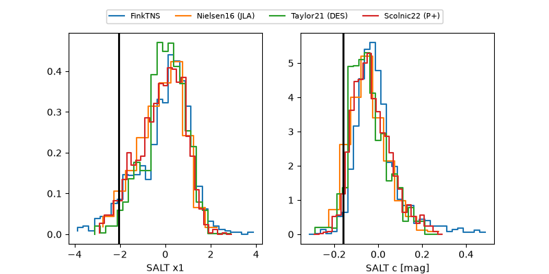

2026wvw
Target 2026wvw at 2026-08-09 09:53
Aliases and brokers:
FINK-ZTF: ztf.fink-portal.org/ZTF26abjvwlf
Lasair-ZTF: lasair-ztf.lsst.ac.uk/objects/ZTF26abjvwlf
ALeRCE-ZTF: alerce.online/object/ZTF26abjvwlf
YSE-PZ: ziggy.ucolick.org/yse/transient_detail/2026wvw
TNS name: wis-tns.org/object/2026wvw
Direct TNS query: direct search
alt names
ZTF26abjvwlf (ztf,fink_ztf)
2026wvw (tns,yse)
PS26guv (panstarrs)
Coordinates:
equatorial (ra, dec) = 308.4687,+3.41052
equatorial (HMS+DMS) = 20:33:52.49,+03:24:37.87
galactic (l, b) = (48.4348,-20.90829)
Flags:
TNS type: nan
peak dt: +6.8
Photometry:
last ztfg=19.97, ztfr=19.86
2 ztfg, 5 ztfr detections
Lightcurve

Visibility



Additional plots
